Решение задачи с помощью пропорции сводится к тому, чтобы сделать неизвестное значение x членом этой пропорции. Затем используя основное свойство пропорции получить линейное уравнение и решить его.
Предварительные навыки Содержание урока- Как решить задачу с помощью пропорции
- Отношение одноименных величин
- Задачи на прямую пропорциональность
- Задачи на обратную пропорциональность
- Масштаб
- Задачи для самостоятельного решения
Как решить задачу с помощью пропорции
Рассмотрим простейший пример. Трем группам нужно выплатить стипендию по 1600 рублей каждому. В первой группе 20 студентов. Значит первой группе будет выплачено 1600 × 20, то есть 32 тыс. рублей.
Во второй группе 17 человек. Значит второй группе будет выплачено 1600 × 17, то есть 27,200 тыс. руб.
Ну и выплатим стипендию третьей группе. В ней 15 человек. На них нужно затратить 1600 × 15, то есть 24 тыс. руб.
В результате имеем следующее решение:
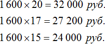
Для подобных задач решение можно записывать с помощью пропорции.
Пропорция по определению есть равенство двух отношений. К примеру, равенство
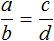
является пропорцией. Эту пропорцию можно прочесть следующим образом:a так относится к b, как c относится d
Аналогично можно соотнести стипендию и студентов, так чтобы каждому досталось по 1600 рублей.
Итак, запишем первое отношение, а именно отношение тысячи шестисот рублей на одного человека:
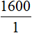
Мы выяснили, что для выплаты 20 студентам по 1600 рублей, нам потребуется 32 тыс. рублей. Значит второе отношение будет отношением тридцати двух тысяч к двадцати студентам:
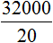
Теперь соединим полученные отношения знаком равенства:
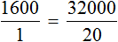
Мы получили пропорцию. Её можно прочесть следующим образом:
Тысяча шестьсот рублей так относятся к одному студенту, как тридцать две тысячи рублей относятся к двадцати студентам.
То есть по 1600 рублей каждому. Если выполнить деление в обеих частях равенства
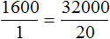
, то обнаружим, что одному студенту, как и двадцати студентам достанется по 1600 рублей.Теперь представим, что сумма денег, необходимых для выплаты стипендии двадцати студентам, была бы неизвестной. Скажем, если бы вопрос стоял так: в группе 20 студентов и каждому нужно выплатить по 1600 рублей. Сколько всего рублей требуется для выплаты стипендии?
В таком случае пропорция приняла бы вид
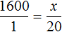
. То есть сумма денег, необходимая для выплаты стипендии, стала неизвестным членом пропорции. Эту пропорцию можно прочесть так:Тысяча шестьсот рублей так относятся к одному студенту, как неизвестное число рублей относится к двадцати студентам
Теперь воспользуемся основным свойством пропорции. Оно гласит, что произведение крайних членов пропорции равно произведению средних:
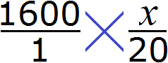
Перемножив члены пропорции «крест-накрест», получим равенство 1600 × 20 = 1 × x. Вычислив обе части равенства, получим 32000 = x или x = 32000. Иными словами, мы найдём значение неизвестной величины, которое искали.
Аналогично можно было определить общую сумму и для остального количества студентов — для 17 и 15. Эти пропорции выглядели как
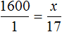
и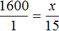
. Воспользовавшись основным свойством пропорции, можно найти значение x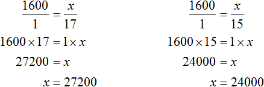
Задача 2. Расстояние равное 100 км автобус проехал за 2 часа. Сколько времени потребуется автобусу, чтобы проехать 300 км, если будет ехать с той же скоростью?
Можно сначала определить расстояние, которое автобус проезжает за один час. Затем определить сколько раз это расстояние содержится в 300 километрах:
100 : 2 = 50 км на каждый час движения
300 км : 50 = 6 часов
Либо можно составить пропорцию «сто километров так относятся к двум часам, как триста километров к неизвестному числу часов»:
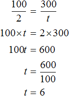
Отношение одноименных величин
Если крайние или средние члены пропорции поменять местами, то пропорция не нарушится.
Так, в пропорции можно поменять местами крайние члены. Тогда получится пропорция
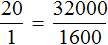
.Пропорция также не нарушится, если её перевернуть, то есть использовать обратные отношения в обеих частях.
Перевернем пропорцию . Тогда получим пропорцию
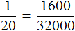
. Взаимосвязь при этом не нарушается. Отношение между студентами равно отношению между суммами денег, предназначенных для этих студентов. Такую пропорцию часто составляют в школе, когда для решения задачи составляются таблицы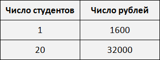
Этот способ записи очень удобен, поскольку позволяет перевести условие задачи в более понятный вид. Решим задачу в которой требовалось определить сколько рублей нужно для выплаты стипендии двадцати студентам.
Условие задачи запишем следующим образом:
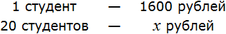
Составим таблицу на основе этого условия:
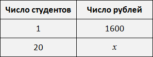
Составим пропорцию, используя данные таблицы:
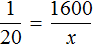
Используя основное свойство пропорции, получим линейное уравнение и найдем его корень:
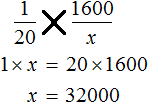
Изначально, мы имели дело с пропорцией , которая составлена из отношений величин разной природы. В числителях отношений располагались суммы денег, а в знаменателях количество студентов:
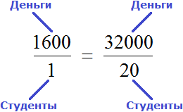
Поменяв местами крайние члены, мы получили пропорцию . Эта пропорция составлена из отношений величин одной природы. В первом отношении содержатся количества студентов, а во втором — суммы денег:
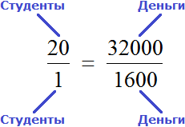
Если отношение составлено из величин одной природы, то мы будем называть его отношением одноименных величин. Например, отношения между фруктами, деньгами, физическими величинами, явлениями, действиями.
Отношение может быть составлено, как из одноименных величин, так и из величин разной природы. Примерами последних являются отношение расстояния ко времени, отношения стоимости товара к его количеству, отношение общей суммы стипендии к количеству студентов.
Пример 2. В школьном саду посажены сосны и березы, причём на каждую сосну приходится 2 березы. Сколько посадили сосен в саду, если берез посадили 240?
Определим сколько сосен было посажено в саду. Для этого составим пропорцию. В условии сказано, что на каждую сосну приходится 2 березы. Напишем отношение, показывающее что на одну сосну приходится две березы:

Теперь напишем второе отношение, показывающее что на x сосен приходится 240 берез
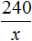
Соединим эти отношения знаком равенства, получим следующую пропорцию:
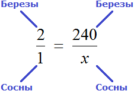
«2 березы так относятся к одной сосне,
как 240 берез относятся к x соснам»
Используя основное свойство пропорции, находим значение x
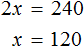
Либо пропорцию можно составить, предварительно записав условие, как в прошлом примере:
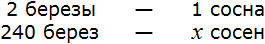
Получится та же пропорция, но в этот раз она будет составлена из отношений одноименных величин:
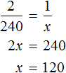
Значит в саду посадили 120 сосен.
Пример 3. Из 225 кг руды получили 34,2 кг меди. Каково процентное содержание меди в руде?
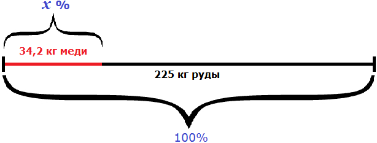
Можно разделить 34,2 на 225 и полученный результат выразить в процентах:
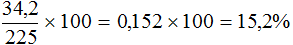
Либо составить пропорцию 225 килограммам руды так приходятся на 100%, как 34,2 кг меди приходятся на неизвестное число процентов:
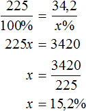
Либо составить пропорцию в которой отношения составлены из одноименных величин:
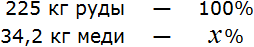
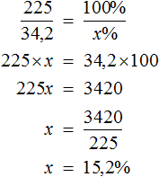
Задачи на прямую пропорциональность
Понимание отношений одноименных величин приводит к пониманию решения задач на прямую и обратную пропорциональность. Начнем с задач на прямую пропорциональность.
Для начала вспомним, что такое прямая пропорциональность. Это взаимосвязь между двумя величинами при которой увеличение одной из них влечет за собой увеличение другой во столько же раз.
Если расстояние в 50 км автобус прошел за 1 час, то для прохождения расстояния в 100 км (при той же скорости) автобусу потребуется 2 часа. Во сколько раз увеличилось расстояние, во столько же раз увеличилось время движения. Как показать это с помощью пропорции?
Одно из предназначений отношения заключается в том, чтобы показать во сколько раз первая величина больше второй. А значит и мы c помощью пропорции можем показать, что расстояние и время увеличились в два раза. Для этого воспользуемся отношением одноименных величин.
Покажем, что расстояние увеличилось в два раза:
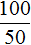
Аналогично покажем, что время увеличилось во столько же раз

Соединим эти отношения знаком равенства, получим пропорцию:
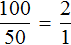
«100 километров так относятся к 50 километрам, как 2 часа относятся к 1 часу»
Если выполнить деление в обеих частях равенства , то обнаружим что расстояние и время были увеличены в одинаковое число раз.
\[2 = 2\]
Задача 2. За 3 ч на мельнице смололи 27 т пшеничной муки. Сколько тонн пшеничной муки можно смолоть за 9 ч, если темп работы не изменится?
Решение
Время работы мельницы и масса перемолотой муки — прямо пропорциональные величины. При увеличении времени работы в несколько раз, количество перемолотой муки увеличится во столько же раз. Покажем это с помощью пропорции.
В задаче дано 3 ч. Эти 3 ч увеличились до 9 ч. Запишем отношение 9 ч к 3 ч. Это отношение будет показывать во сколько раз увеличилось время работы мельницы:
Теперь запишем второе отношение. Это будет отношение x тонн пшеничной муки к 27 тоннам. Данное отношение будет показывать, что количество перемолотой муки увеличилось во столько же раз, сколько и время работы мельницы
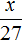
Соединим эти отношения знаком равенства, получим пропорцию
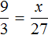
.Воспользуемся основным свойством пропорции и найдем x
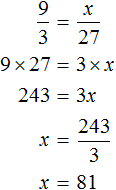
Значит за 9 ч можно смолоть 81 т пшеничной муки.
Вообще, если взять две прямо пропорциональные величины и увеличить их в одинаковое число раз, то отношение нового значения к старому значению первой величины будет равно отношению нового значения к старому значению второй величины.
Так и в предыдущей задаче старые значения были 3 ч и 27 т. Эти значения были увеличены в одинаковое число раз (в три раза). Новыми значениями стали 9 ч и 81 т. Тогда отношение нового значения времени работы мельницы к старому значению равно отношению нового значения массы перемолотой муки к старому значению
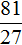
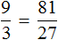
Если выполнить деление в обеих частях равенства, то обнаружим, что время работы мельницы и количество смолотой муки увеличилось в одинаковое число раз:
\[3 = 3\]
Пропорцию, которую составляют к задачам на прямую пропорциональность, можно описать с помощью выражения:
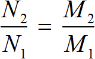
| Где | 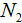 − новое значение первой величины |
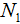 − старое значение первой величины |
|
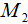 − новое значение второй величины |
|
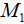 − старое значение второй величины |
Применительно к нашей задаче значения переменных будут следующими:
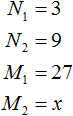
Где впоследствии стало равно 81.
Задача 2. Для 8 коров в зимнее время доярка ежедневно заготовляет 80 кг сена, 96 кг корнеплодов, 120 кг силоса и 12 кг концентратов. Определить ежедневный расход этих кормов для 18 коров.
Решение
Количество коров и масса каждого из кормов — прямо пропорциональные величины. При увеличении количества коров в несколько раз, масса каждого из кормов увеличится во столько же раз.
Составим несколько пропорций, вычисляющих массу каждого из кормов для 18 коров.
Начнем с сена. Ежедневно для 8 коров его заготовляют 80 кг. Тогда для 18 коров будет заготовлено x кг сена.
Запишем отношение, показывающее во сколько раз увеличилось количество коров:
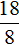
Теперь запишем отношение, показывающее во сколько раз увеличилась масса сена:
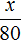
Соединим эти отношения знаком равенства, получим пропорцию:
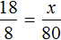
Отсюда находим x
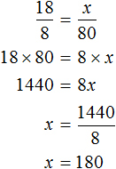
Значит для 18 коров нужно заготовить 180 кг сена. Аналогично определяем массу корнеплодов, силоса и концентратов.
Для 8 коров ежедневно заготовляют 96 кг корнеплодов. Тогда для 18 коров будет заготовлено x кг корнеплодов. Составим пропорцию из отношений и
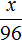
, затем вычислим значение x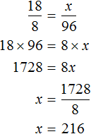
Определим сколько силоса и концентратов нужно заготовить для 18 коров:
Значит для 18 коров ежедневно нужно заготавливать 180 кг сена, 216 кг корнеплодов, 270 кг силоса и 27 кг концентратов.
Задача 3. Хозяйка варит вишнёвое варенье, причём на 3 стакана вишни кладёт 2 стакана сахара. Сколько сахара нужно положить на 12 стаканов вишни? на 10 стаканов вишни? на  стакана вишни?
стакана вишни?
Решение
Количество стаканов вишни и количество стаканов сахарного песка — прямо пропорциональные величины. При увеличении количества стаканов вишни в несколько раз, количество стаканов сахара увеличится во столько же раз.
Запишем отношение, показывающее во сколько раз увеличилось количество стаканов вишни:
Теперь запишем отношение, показывающее во сколько раз увеличилось количество стаканов сахара:
Соединим эти отношения знаком равенства, получим пропорцию и найдем значение x
Значит на 12 стаканов вишни нужно положить 8 стаканов сахара.
Определим количество стаканов сахара для 10 стаканов вишни и  стакана вишни
стакана вишни
Задачи на обратную пропорциональность
Для решения задач на обратную пропорциональность опять же можно использовать пропорцию, составленную из отношений одноименных величин.
В отличие от прямой пропорциональности, где величины увеличиваются или уменьшаются в одну и ту же сторону, в обратной пропорциональности величины изменяются обратно друг другу.
Если одна величина увеличивается в несколько раз, то другая уменьшается во столько же раз. И наоборот, если одна величина уменьшается в несколько раз, то другая увеличивается во столько же раз.
Допустим, что нужно покрасить забор, состоящий из 8 листов
Один маляр будет красить все 8 листов сам
Если маляров будет 2, то каждый покрасит по 4 листа.
Это конечно же при условии, что маляры будут честными между собой и справедливо разделят эту работу поровну на двоих.
Если маляров будет 4, то каждый покрасит по 2 листа
Замечаем, что при увеличении количества маляров в несколько раз, количество листов которые приходятся на одного маляра уменьшаются во столько же раз.
Итак, мы увеличили количество маляров с 1 до 4. Другими словами, увеличили количество маляров в четыре раза. Запишем это с помощью отношения:

В результате количество листов забора, которые приходятся на одного маляра уменьшилось в четыре раза. Запишем это с помощью отношения:
Соединим эти отношения знаком равенства, получим пропорцию
«4 маляра так относятся к 1 маляру, как 8 листов относятся к 2 листам»
Задача 2. 15 рабочих закончили отделку квартир в новом доме за 24 дня. За сколько дней выполнили бы эту работу 18 рабочих?
Решение
Количество рабочих и количество дней, затраченных на работу — обратно пропорциональные величины. При увеличении количества рабочих в несколько раз, количество дней, необходимых для выполнения этой работы, уменьшится во столько же раз.
Запишем отношение 18 рабочих к 15 рабочим. Это отношение будет показывать во сколько раз увеличилось количество рабочих
Теперь запишем второе отношение, показывающее во сколько раз уменьшилось количество дней. Поскольку количество дней уменьшится с 24 дней до x дней, то второе отношение будет отношением старого количества дней (24 дня) к новому количеству дней (x дней)
Соединим полученные отношения знаком равенства, получим пропорцию:
Отсюда находим x
Значит 18 рабочих выполнят необходимую работу за 20 дней.
Вообще, если взять две обратно пропорциональные величины и увеличить одну из них в определенное число раз, то другая уменьшится во столько же раз. Тогда отношение нового значения к старому значению первой величины будет равно отношению старого значения к новому значению второй величины.
Так и в предыдущей задаче старые значения были 15 рабочих и 24 дня. Количество рабочих было увеличено с 15 до 18 (т.е. было увеличено в раза). В результате количество дней, необходимых для выполнения работы, уменьшилось во столько же раз. Новыми значениями стали 18 рабочих и 20 дней. Тогда отношение нового количества рабочих к старому количеству равно отношению старого количества дней к новому количеству
Для составления пропорции к задачам на обратную пропорциональность можно пользоваться формулой:
| Где | − новое значение первой величины |
| − старое значение первой величины | |
| − старое значение второй величины | |
| − новое значение второй величины |
Применительно к нашей задаче значения переменных будут следующими:
Где впоследствии стало равно 20.
Задача 2. Скорость парохода относится к скорости течения реки, как 36 : 5. Пароход двигался вниз по течению 5 ч 10 мин. Сколько времени потребуется ему, чтобы вернуться обратно?
Решение
Собственная скорость парохода составляет 36 км/ч. Скорость течения реки реки 5 км/ч. Поскольку пароход двигался по течению реки, то скорость его движения составила 36 + 5 = 41 км/ч. Время пути составила 5 ч 10 мин. Для удобства выразим время в минутах:
5 ч 10 мин = 300 мин + 10 мин = 310 мин
Поскольку на обратном пути пароход двигался против течения реки, то его скорость составила 36 − 5 = 31 км/ч.
Скорость парохода и время его движения — обратно пропорциональные величины. При уменьшении скорости в несколько раз, время его движения увеличится во столько же раз.
Запишем отношение, показывающее во сколько раз уменьшилась скорость движения:
Теперь запишем второе отношение, показывающее во сколько раз увеличилось время движения. Поскольку новое время x будет больше старого времени, в числителе отношения запишем время x, а в знаменателе старое время, равное трёхсот десяти минутам
Соединим полученные отношения знаком равенства, получим пропорцию . Отсюда найдём значение x
410 минут это 6 часов и 50 минут. Значит пароходу потребуется 6 часов и 50 минут, чтобы вернуться обратно.
Задача 3. На ремонте дороги работало 15 человек, и они должны были закончить работу за 12 дней. На пятый день утром подошли еще несколько рабочих, и оставшаяся работа была выполнена за 6 дней. Сколько рабочих прибыло дополнительно?
Решение
Вычтем из 12 дней 4 отработанных дня. Так мы определим сколько ещё дней осталось работать пятнадцати рабочим
12 дней − 4 дня = 8 дней
На пятый день дополнительно прибыло x рабочих. Тогда всего рабочих стало 15 + x.
Количество рабочих и количество дней, необходимых для выполнения работы — обратно пропорциональные величины. При увеличении количества рабочих в несколько раз, количество дней уменьшится во столько же раз.
Запишем отношение, показывающее во сколько раз увеличилось количество рабочих:
Теперь запишем во сколько раз уменьшилось количество дней, необходимых для выполнения работы:
Соединим эти отношения знаком равенства, получим пропорцию . Отсюда можно вычислить значение x
Значит 5 рабочих прибыло дополнительно.
Масштаб
Масштабом называют отношение длины отрезка на изображении к длине соответствующего отрезка на местности.
Допустим, что расстояние от дома до школы составляет 8 км. Попробуем нарисовать план местности, где будут указаны дом, школа и расстояние между ними. Но изобразить на бумаге расстояние, равное 8 км мы не можем, поскольку оно довольно велико. Но зато мы можем уменьшить это расстояние в несколько раз так, чтобы оно уместилось на бумаге.
Пусть километры на местности на нашем плане будут выражаться в сантиметрах. Переведем 8 километров в сантиметры, получим 800 000 сантиметров.
Уменьшим 800 000 см в сто тысяч раз:
800 000 см : 100 000 см = 8 см
8 см это расстояние от дома до школы, уменьшенное в сто тысяч раз. Теперь без труда можно нарисовать на бумаге дом и школу, расстояние между которыми будет 8 см.
Эти 8 см относятся к реальным 800 000 см. Так и запишем с помощью отношения:
8 : 800 000
Одно из свойств отношения гласит, что отношение не меняется если его члены умножить или разделить на одно и то же число.
В целях упрощения отношения 8 : 800 000 оба его члена можно разделить на 8. Тогда получим отношение 1 : 100 000. Это отношение и назовём масштабом. Данное отношение показывает, что один сантиметр на плане относится (или соответствует) ста тысячам сантиметров на местности.
Поэтому на нашем рисунке необходимо указать, что план составлен в масштабе 1 : 100 000
Примеры:
1 см на плане относится к 100 000 см на местности;
2 см на плане относится к 200000 см на местности;
3 см на плане относится к 300000 на местности и т.д.
К любой карте или плану указывается в каком масштабе они сделаны. Этот масштаб позволяет определять реальное расстояние между объектами.
Так, наш план составлен в масштабе 1 : 100 000. На этом плане расстояние между домом и школой составляет 8 см. Чтобы вычислить реальное расстояние между домом и школой, нужно 8 см увеличить в 100 000 раз. Иными словами, умножить 8 см на 100 000
8 см × 100 000 = 800 000 см
Получаем 800 000 см или 8 км, если перевести сантиметры в километры.
Допустим, что между домом и школой располагается дерево. На плане расстояние между школой и этим деревом составляет 4 см.
Тогда реальное расстояние между домом и деревом будет 4 см × 100 000 = 400 000 см или 4 км.
Расстояние на местности можно определять с помощью пропорции. В нашем примере расстояние между домом и школой будет вычисляться с помощью следующей пропорции:
Эту пропорцию можно прочитать так:
1 см на плане так относится к 100000 см на местности, как 8 см на плане относятся к x см на местности.
Из этой пропорции узнаём, что значение x равно 800000 см.
Пример 2. На карте расстояние между двумя городами составляет 8,5 см. Определить реальное расстояние между городами, если карта составлена в масштабе 1 : 1 000 000.
Решение
Масштаб 1 : 1 000 000 указывает, что 1 см на карте соответствует 1 000 000 см на местности. Тогда 8,5 см будут соответствовать x см на местности. Составим пропорцию 1 к 1000000 как 8,5 к x
В 1 км содержится 100000 см. Тогда в 8 500 000 см будет
Либо можно рассуждать так. Расстояние на карте и расстояние на местности — прямо пропорциональные величины. При увеличении расстояния на карте в несколько раз, расстояние на местности увеличится во столько же раз. Тогда пропорция примет следующий вид. Первое отношение будет показывать во сколько раз расстояние на местности больше расстояния на карте:
Второе отношение покажет, что расстояние на местности во столько же раз больше, чем 8,5 см на карте:
Отсюда x равен 8 500 000 см или 85 км.
Задача 3. Длина реки Невы 74 км. Чему равняется ее длина на карте, масштаб которой 1 : 2 000 000
Решение
Масштаб 1 : 2000000 говорит о том, что 1 см на карте соответствует 2 000 000 см на местности.
А 74 км на это 74 × 100 000 = 7 400 000 см на местности. Уменьшив 7 400 000 в 2 000 000, мы определим длину реки Невы на карте
7 400 000 : 2 000 000 = 3,7 см
Значит на карте, масштаб которой 1 : 2 000 000 длина реки Невы составляет 3,7 см.
Запишем решение с помощью пропорции. Первое отношение будет показывать сколько раз длина на карте меньше длины на местности:
Второе отношение будет показывать, что 74 км (7 400 000 см) уменьшились во столько же раз:
Отсюда находим x равный 3,7 см
Задачи для самостоятельного решения
Показать решение
Решение
Пусть x кг масла можно получить из 7 кг хлопкового семени. Масса хлопкового семени и масса получаемого масла — прямо пропорциональные величины. Тогда уменьшение хлопкового семени с 21 кг до 7 кг, приведет к уменьшению получаемого масла во столько же раз.
Ответ: из 7 кг хлопкового семени получится 1,7 кг масла.
Показать решение
Решение
Длина участка на котором производится замена рельсов равна 8 × 360 = 2880 м.
Пусть x двенадцатиметровых рельсов требуется для замены. Увеличение длины одного рельса с 8 м до 12 м приведет к уменьшению количества рельсов с 360 до x штук. Иными словами, длина рельса и их количество связаны обратно пропорциональной зависимостью
Ответ: для замены старых рельсов потребуется 240 новых.
Показать решение
Решение
Если 60% учащихся пошли в кино, а остальные 12 человек на выставку, то на 40% учащихся и будут приходиться 12 человек, пошедших на выставку. Тогда можно составить пропорцию в которой 12 учащихся так относятся к 40%, как все x учащихся относятся к 100%
Либо можно составить пропорцию, состоящей из отношений одноименных величин. Количество учащихся и процентная доля изменяются прямо пропорционально. Тогда можно записать, что во сколько раз увеличилось количество участников во столько же раз увеличилась процентная доля (с 40% до 100%)
Ответ: в классе 30 учащихся.
Показать решение
Решение
Масштаб 1 : 500000 говорит о том, что 1 см на карте соответствует 500 000 см на местности.
Тогда увеличив 18 см в 500 000, мы получим действительное расстояние между городами
18 см × 500 000 = 9 000 000 см
Переведем 9 000 000 см в километры. В одном километре 100 000 см. Тогда в 9 000 000 см будет
Запишем решение с помощью пропорции:
Ответ: расстояние между городами 90 км.
Показать решение
Решение
Скорость и время — обратно пропорциональные величины. При увеличении скорости в несколько раз, время движения уменьшится во столько же раз.
Запишем отношение, показывающее по сколько раз увеличилась скорость движения пешехода:
Запишем отношение, показывающее что время движения уменьшилось во столько же раз:
Соединим эти отношения знаком равенства, получим пропорцию и найдём значение x
Ответ: пешеход затратит 2 часа если будет двигаться со скорость 4,5 км/ч.
Показать решение
Решение
Выражение «перевыполнили план на 15%» означает, что к имеющемуся 100% плану выполнили еще 15% того же плана. Итого выполнено 115% плана. На эти 115% приходятся 230 выпущенных станков
А по плану завод должен был выпустить x станков. Эти x станков приходятся на 100% изначального плана
Составим пропорцию из имеющихся отношений и найдём значение x
Либо можно воспользоваться отношениями одноименных величин. Количество выпущенных станков и процентная доля, на которые эти станки приходятся, связаны прямо пропорциональной зависимостью. При увеличении количества станков в несколько раз, процентная доля увеличивается во столько же раз. Тогда можно записать, что 230 станков во столько раз больше, чем x станков, во сколько раз больше 115%, чем 100%
Ответ: по плану завод должен был выпустить 200 станков.
Понравился урок?
Вступай в нашу новую группу Вконтакте и начни получать уведомления о новых уроках